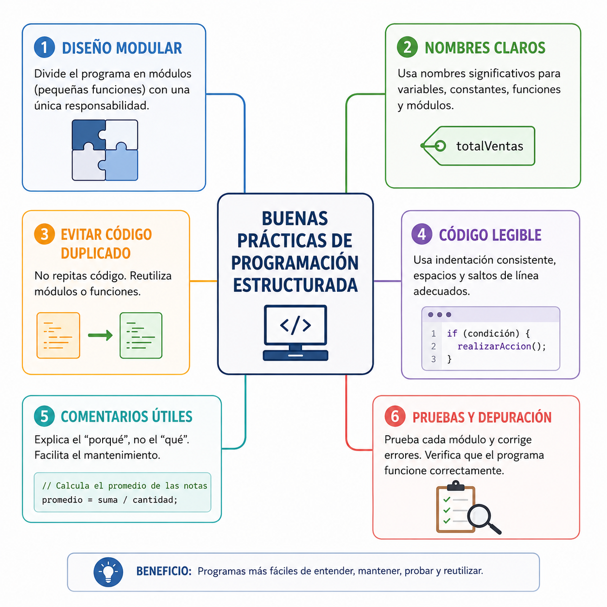

Un plano de ingeniería con anotaciones ilegibles, cables sin identificar y sin una guía clara es una trampa mortal ante un fallo del sistema. En el desarrollo de software industrial ocurre lo mismo: el código se escribe una vez, pero se lee y repara cientos de veces por otros desarrolladores. Aplicar buenas prácticas como indentar el código o nombrar de forma descriptiva las variables diferencia a un programador novato de un Ingeniero de Software profesional.
⚠️ Debes visualizar el video completo sin adelantar para desbloquear la evaluación.
Material audiovisual adaptado con fines estrictamente educativos. Créditos del autor: Codigo en la Web.

El estándar de calidad de un algoritmo estructurado no solo se evalúa por su correcto funcionamiento, sino por su legibilidad, facilidad de mantenimiento y apego a normas estandarizadas.
x, a, n1). En su lugar, se deben emplear identificadores descriptivos autoexplicativos (ej: salario_neto, contador_errores).Si un programador de sistemas nombra a una variable crítica como `p` en lugar de asignarle el nombre `precio_combustible`, ¿qué regla formal de ingeniería de software está vulnerando?
¿Cuál es el beneficio directo e inmediato de aplicar una correcta "Indentación" o sangrado dentro de las estructuras de control anidadas?
Según el contexto real planteado, ¿cuál es la proporción operativa del código fuente en la industria del software profesional?
De acuerdo con Joyanes Aguilar (2013), ¿qué es exactamente el "sangrado" o indentación?
¿Qué tipo de identificadores prohíbe explícitamente la regla formal de nombres mnemotécnicos?
¿Cuál es la definición académica y el propósito de las líneas de comentario en un algoritmo estructurado?
En lugar de usar la variable genérica `e`, ¿cuál de las opciones cumple la regla de legibilidad para registrar un conteo de fallos astronómicos?
¿Por qué se afirma en la lección que un código fuente desordenado y sin documentación es un peligro comparable a un plano de ingeniería ilegible?
¿Qué métricas determinan el estándar de calidad y excelencia de un algoritmo más allá de que funcione correctamente?
¿Cuál es el beneficio directo para un equipo de ingeniería al utilizar nombres descriptivos y autoexplicativos?